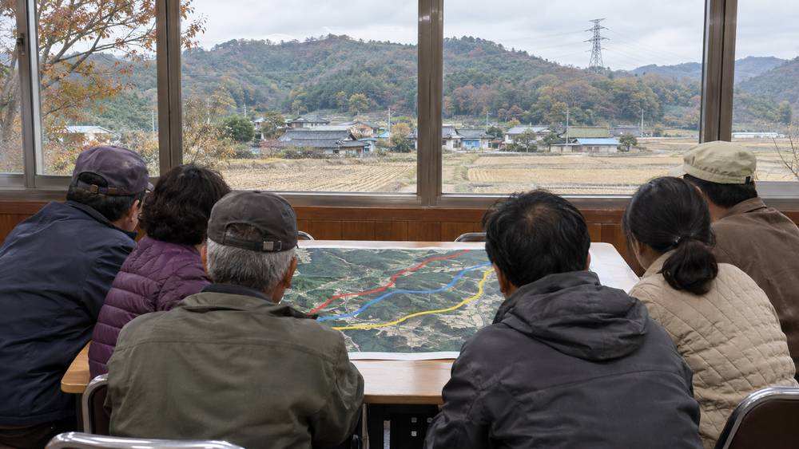

사회
송전선로 지원금 3분의 2 이내 주변 지역에 배분…주민설명회 2회에서 3회로

기후에너지환경부, 12월 1일까지 입법·행정예고…주민이 낸 대안 경과지도 입지선정위원회 심의 대상
기후에너지환경부가 10월 22일 입법·행정예고한 개정안에 따르면, 송전선로 주변 주민은 대안 경과지나 부지를 서면으로 제안할 수 있다. 입지선정위원회(입선위)가 심의·의결하면 그 제안은 후보 입지가 된다.
입선위 구성 전 시군구 단위 주민설명회는 2회에서 3회로 늘리고, 주민의 회의 참관은 원칙적으로 허용한다. 가공선로 1km당 20억 원인 지방정부 지원금은 3분의 2 이내를 설비 주변 지역에 나누고, 마을이 태양광 사업을 하면 설치비를 우선 반영한다. 9월 15일 국무회의 보고의 후속 조치로 '계통햇빛소득마을' 선도사업(송전망 주변 마을이 태양광으로 소득을 얻는 사업)도 지방정부·한국전력공사와 함께 발굴한다.
이정현 전북환경운동연합 대표는 변전소(점)와 송전선로(선)의 윤곽을 잡는 초기 단계부터 주민이 참여해야 한다고 말했다. 기후에너지환경부는 12월 1일까지 주민과 지방정부 의견을 받은 뒤 법제처 심사를 거쳐 하위법령과 고시 개정을 마칠 계획이다.
출처: 경향신문 2026-11-12 손우성 원문 보기
출처: 기후에너지환경부 2026-10-21 송전망 주변마을 '햇빛소득' 지원 및 입지선정 주민참여 확대(정책브리핑 게재 보도자료) 원문 보기
시민이 만들고 지역이 소유하는 에너지 전환제4섹터 방식 시민주도 지역에너지 공공개발